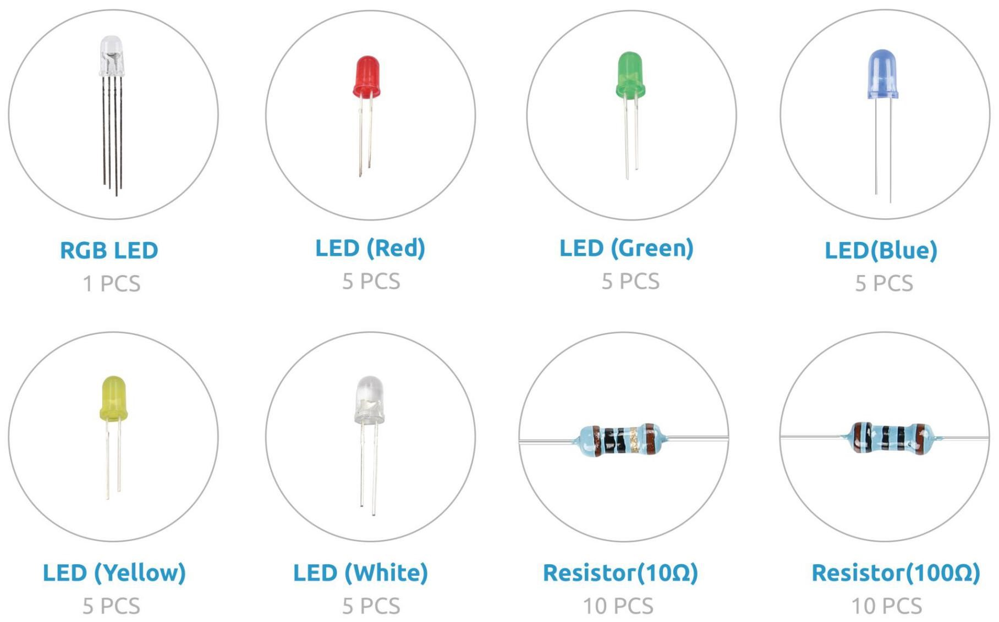
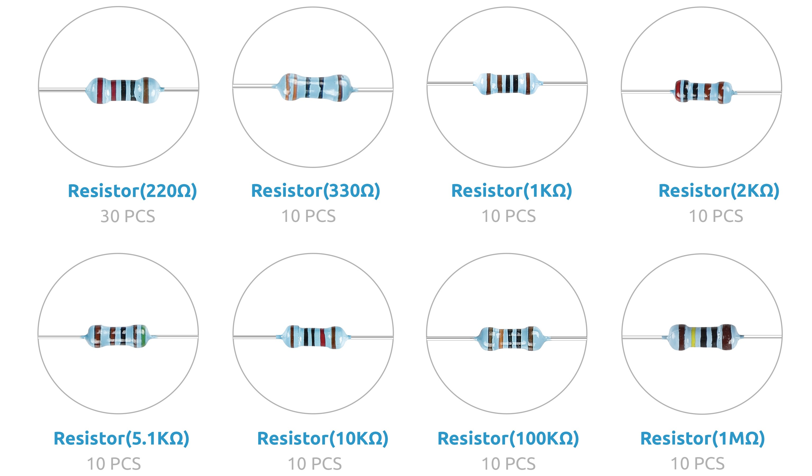
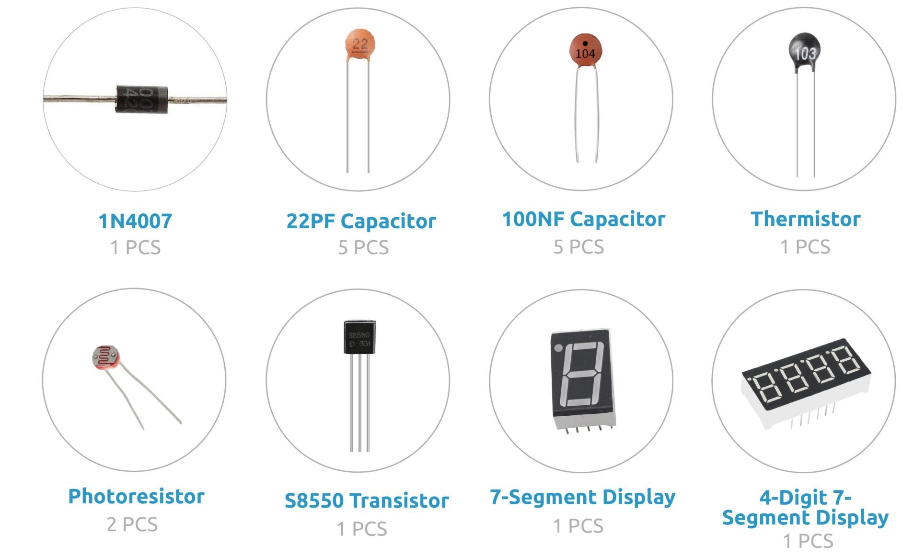
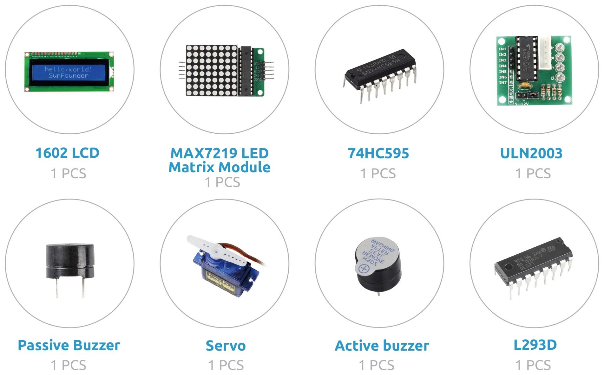
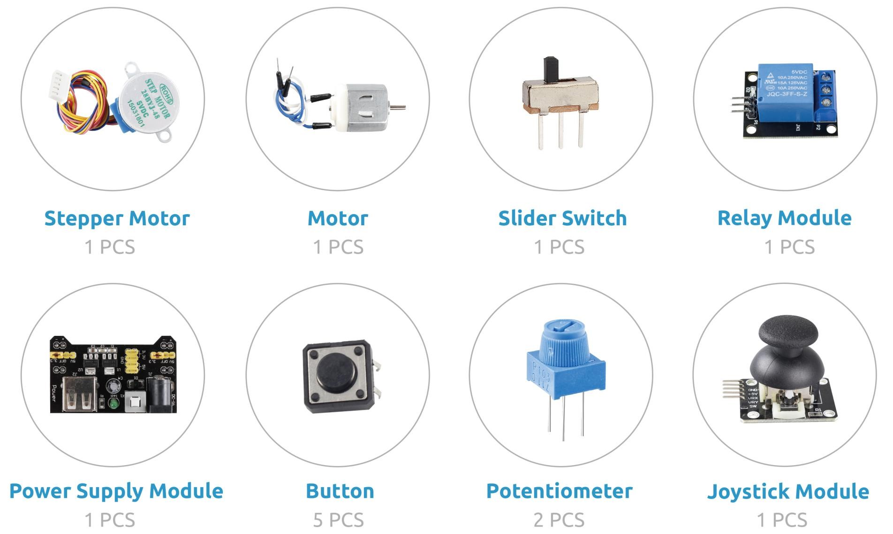
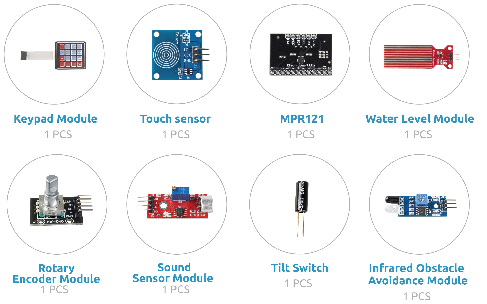
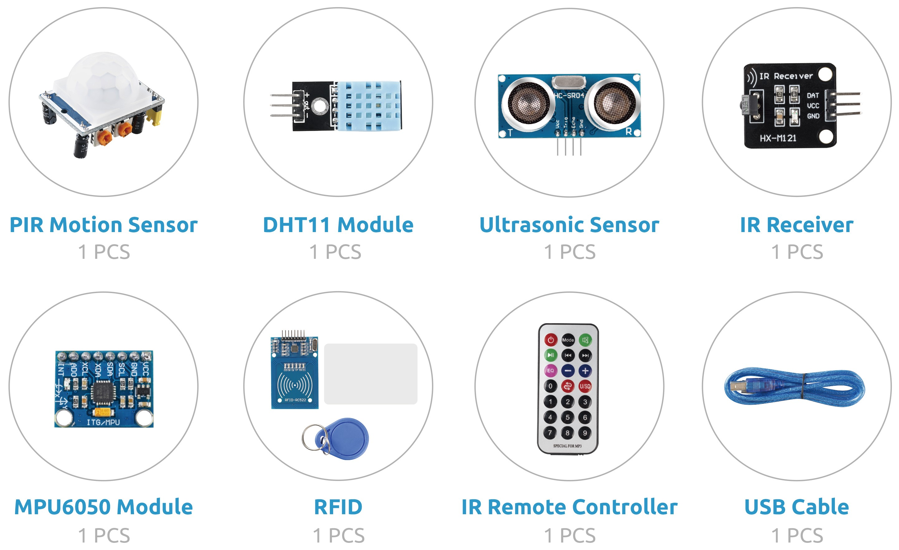
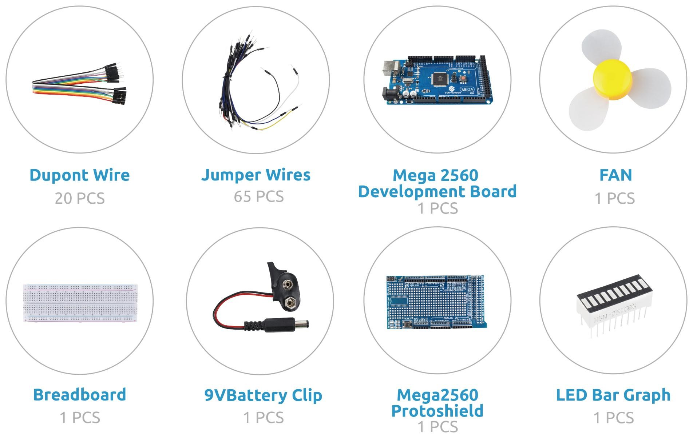

SunFounder Vincent Kit
Liste der Komponenten
Introduction
Teil 1: Grundlegend
Teil 2: Komponente
Part 3 Example
Teil 4: Anhang
SunFounder Vincent Kit
Docs
»
Liste der Komponenten
View page source
Liste der Komponenten
¶
       